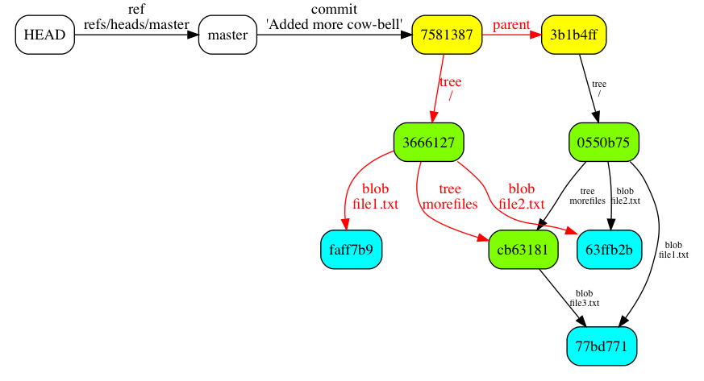

Git Made Simple
How Git Does Its Magic
Created by Jim Moore

Git Made Simple by Jim J. Moore is licensed under a Creative Commons Attribution 4.0 International License.
Presentation source at https://github.com/jdigger/git-fundimentals-preso
- Naming Things
- Blobs, Trees and Commits
- Hash Trees
- Immutable DAG Benefits
- Performance and Cleanliness
- The Index
- References
- Add/Commit/Checkout/Cherry-Pick
- Merge/Rebase
Create A Repo
$ mkdir gittemp; cd gittemp
$ git init
$ git config user.name "Git Fundamentals"
$ git config user.email "gitfund@git.com"Create Some Content
$ echo "Some cowbell" > file1.txt
$ echo "Just some file2 data" > file2.txt
$ mkdir morefiles
$ cp file1.txt morefiles/file3.txtWhat’s in a name?
Names are important…
How do we want to identify the content we just created?
- We want some way to keep track of content and know when that content has changed.
- Ideally in a way where that name/identifier would survive context shifts (such as being copied)
- File name?
- File name (URN?) and modification time?
- A self-incrementing revision number?

Solution
We’re going to give it a name based on its content rather than something effectively random.
Hash function — any function that can be used to map data of arbitrary size to data of fixed size.
Naming the Content
$ git hash-object file1.txt
77bd771f7fefc66994a22d922cad923ae068675a
$ git hash-object file2.txt
63ffb2bff74e9161a82b82999718f441df6a68f1
$ git hash-object morefiles/file3.txt
77bd771f7fefc66994a22d922cad923ae068675a

Identify What Should be Saved To The Repository
$ git add file1.txt file2.txt morefiles/file3.txt
$ git ls-files --stage
100644 77bd771f7fefc66994a22d922cad923ae068675a 0 file1.txt
100644 63ffb2bff74e9161a82b82999718f441df6a68f1 0 file2.txt
100644 77bd771f7fefc66994a22d922cad923ae068675a 0 morefiles/file3.txtSave To The Repository
$ git commit -m "First good version"
[master (root-commit) 3b1b4ff] First good version
3 files changed, 3 insertions(+)
create mode 100644 file1.txt
create mode 100644 file2.txt
create mode 100644 morefiles/file3.txt</div>Inspecting the Commit
$ git cat-file -p 3b1b4ff
tree 0550b757d5b412ab40416d2c7ede1313d1c38087
author Git Fundamentals <gitfund@git.com> 1409711557 -0600
committer Git Fundamentals <gitfund@git.com> 1409711557 -0600
First good versionThe commit fields
| tree |
id of the object that contains the file tree structure |
| parent(s) |
0..n ids to the parents of this commit. Most commits will have one parent; most merges will have two, though can have any number of parents; this is the first so it has none |
| author |
the author (name and email) with when it was initially committed |
| committer |
the committer; usually the author, but can be different for author attribution reasons |
| message |
a description of why this change was saved |
Inspecting the Tree
$ git cat-file -p 0550b75
100644 blob 77bd771f7fefc66994a22d922cad923ae068675a file1.txt
100644 blob 63ffb2bff74e9161a82b82999718f441df6a68f1 file2.txt
040000 tree cb63181eaa27bf4caedf9d9d212840206a77c11d morefiles
$ git cat-file -p cb63181
100644 blob 77bd771f7fefc66994a22d922cad923ae068675a file3.txt
$ git cat-file -p 77bd771
Some cowbellOn the Filesystem
$ find .git/objects -type f
.git/objects/05/50b757d5b412ab40416d2c7ede1313d1c38087 # tree - top of commit 1
.git/objects/3b/1b4ff08b048aceeb4ccb38739101ec94b8fd01 # commit 1 - "First good version"
.git/objects/63/ffb2bff74e9161a82b82999718f441df6a68f1 # blob - file2.txt
.git/objects/77/bd771f7fefc66994a22d922cad923ae068675a # blob - file1.txt & file3.txt
.git/objects/cb/63181eaa27bf4caedf9d9d212840206a77c11d # tree - "morefiles" subdir under
top tree of commit 1
$ cat .git/HEAD
ref: refs/heads/master
$ cat .git/refs/heads/master
3b1b4ff08b048aceeb4ccb38739101ec94b8fd01

Change File1.txt
$ echo "More cow-bell\!" > file1.txt
$ git commit -am "Added more cow-bell."
[master 7581387] Added more cow-bell.
1 file changed, 1 insertion(+), 1 deletion(-)
$ git cat-file -p 7581387
tree 366612747e1b0730cdbb680bb48ba6132b321848
parent 3b1b4ff08b048aceeb4ccb38739101ec94b8fd01
author Git Fundamentals <gitfund@git.com> 1409885160 -0600
committer Git Fundamentals <gitfund@git.com> 1409885160 -0600
$ git cat-file -p 3666127
100644 blob faff7b9f491fea306a748f2e17e536918fb6a601 file1.txt
100644 blob 63ffb2bff74e9161a82b82999718f441df6a68f1 file2.txt
040000 tree cb63181eaa27bf4caedf9d9d212840206a77c11d morefiles
Rename Files
$ mv file2.txt wow.txt ; mv morefiles hasfiles
$ git add -A && git commit -m "Renamed files"
[master e001241] Renamed files
2 files changed, 0 insertions(+), 0 deletions(-)
rename {morefiles => hasfiles}/file3.txt (100%)
rename file2.txt => wow.txt (100%)
$ git cat-file -p e001241
tree 96996c4fd8813d8854ebeee54d753115cb8a880f
parent 758138729b824c8aabecff1a961202f8fd7d50df
author Git Fundamentals <gitfund@git.com> 1409888276 -0600
committer Git Fundamentals <gitfund@git.com> 1409888276 -0600
Renamed files
$ git cat-file -p 96996c4f
100644 blob faff7b9f491fea306a748f2e17e536918fb6a601 file1.txt
040000 tree cb63181eaa27bf4caedf9d9d212840206a77c11d hasfiles
100644 blob 63ffb2bff74e9161a82b82999718f441df6a68f1 wow.txt
The Power of Guarantees
Because each object’s content has a pointer to the one below, a change in a sub-object guarantees that the hash for the parent will be different
Merkle Trees
For the developers/computer-science people, this is an extremely well-proven technique known as a hash tree (a.k.a. Merkle tree)
Instead of using pointers comprised of memory addresses, it uses pointers using a unique "name" based upon the referenced value’s contents
It is used as a highly efficient way to guarantee data integrity for everything from filesystems and databases (e.g., ZFS, Riak, Casandra) to peer-to-peer data transfer (e.g., BitTorrent) to currencies (e.g., Bitcoin)
Direction of the Arrows
The DAG (Directed Acyclic Graph) based on hashes is what makes it possible for git to be fully distributed
- Blobs are shared between Trees
- Trees are shared among Commits
- Commits are shared among References
Because identical content hashes to the same thing, and you have all of the content all of the time, it’s trivial to do the consistency checks needed to know exactly where, when and how content diverged
This is true even among systems with no communication between them
There is no need to know how you’re going to want to slice-n-dice that information ahead of time
Moving Files
It “noticed” that we renamed the file and directory…
How, since nothing in the data-structures recorded that?
Some of the porcelain uses rename detection based on configurable sensitivity.
Because it’s easily detectable at runtime, some of the porcelain, such as git blame -M can show how individual lines have moved around between files.
Not Storing Deltas or Patches?
Each file, as we saw before, is a “complete blob” in git’s object store
Constant Time
Notice that navigating between revisions is an O(1) operation
Writing to the repository is extremely fast: no matter how many files there are, it’s just enough time to calculate the SHA-1s of the new content, zlib compress it, and copy just that new content into the object store
Reading vs Writing
Packing and Garbage Collection
$ git gc
Counting objects: 7, done.
Delta compression using up to 8 threads.
Compressing objects: 100% (4/4), done.
Writing objects: 100% (7/7), done.
Total 7 (delta 0), reused 0 (delta 0)
$ find .git/objects -type f
.git/objects/info/packs
.git/objects/pack/pack-4aaa8775b3535f0f7ae44215272d423d924ee3fa.idx
.git/objects/pack/pack-4aaa8775b3535f0f7ae44215272d423d924ee3fa.packThe Index
The portal between the working-directory and the repository
Use Cases
- Want to be able to add some files but not all to a specific commit.
- Want to be able to add some parts of a file to a commit, but not others.
- Want to be able to “move” the commit pointer without affecting the files in the working directory.
- “Oops, I didn’t mean to commit the password file. Let’s try that again.”
- “Oops. I had a typo in the commit message.”
- “Oops…”
- Improving the readability/understandability of the project’s history
- A desire to project the illusion of undeserved competence
All problems in computer science can be solved by another level of indirection.
— David Wheeler, Beautiful Code
Thus, instead of just the Working Directory and the Repository, there is also the Index
(a.k.a. the Dir Cache, Staging Area, etc.)
Lifecycle
Working directory → Index → Tree → Commit
Manipulating the Index
- git add file and git rm file - adds and removes files from the index
- git add -p file - add a “patch” from this file, allowing selection of specific pieces of the file and not the whole thing
- While this can be done at the command line, this is really something that a graphical tool like SourceTree makes much easier
- git reset HEAD~1 - move the index to what it looked like before the last commit, but leave the files as they were (i.e., “forget” that git commit happened)
- git reset --hard HEAD - move the index and filesystem to what it looked like at the last commit (very commonly done to toss away every that’s been done since the last commit because of a bad rabbit trail)
References
Tags
$ git tag aTag
$ cat .git/refs/tags/aTag
e0012413fb1c0728dc1d9b86c9b074dfc24a220a
$ git cat-file -t e001241
commitAnnotated Tags
$ git tag -a annTag -m "annotated tag here"
$ cat .git/refs/tags/annTag
85aca4362a29ddb70a70c6d6f882d4c1e04b2eb3
$ git cat-file -t 85aca43
tag
$ git cat-file -p 85aca43
object e0012413fb1c0728dc1d9b86c9b074dfc24a220a
type commit
tag annTag
tagger Git Fundamentals <gitfund@git.com> 1410039830 -0600
annotated tag hereBranches
$ cat .git/refs/heads/master
e0012413fb1c0728dc1d9b86c9b074dfc24a220aThe big difference between branches and tags is that the value in that file will change over time during a normal workflow. (i.e., As you make changes to the branch.)
Mutability
The contents of “objects” can never change.
Period.
Changing an object changes its hash, thereby guaranteeing consistency
“References” may change, which is why they don’t have a hash
HEAD
“HEAD” (.git/HEAD) is not really a “reference”
It’s used as part of the porcelain to keep track of where the “user” is
A “detached HEAD” is simply a HEAD that points to a specific commit instead of a branch
Revision IDs
A great explanation on Stackoverflow.
Some primary examples:
- sha1
-
a specific hash reference
- refname
-
branch name, tag, HEAD, etc.
- rev^
-
the parent of the commit
- “master^” is the parent of the commit pointed to by the head of “master”
- rev~n
-
the nth parent of the commit.
- "HEAD~1" is the parent of the commit pointed to by HEAD
- "HEAD~5" goes back five commits before the current one
Applying Changes
git add _filename_
The process:
- Compare the working-directory hash of the file to what is in the index
- If the hashes are different, copy the file into the object store as a new blob
- Record the hash for the file in the Index (a.k.a., “tree builder”)
git commit -m "_message_"
The process:
- Write the Index out as a tree object
- Create a commit object that has the tree’s hash and meta-data (author, date, comment, etc.)
- Update the head of the branch pointed to by HEAD
git checkout _branchname_
The process:
- Replace the Index with the tree for the commit
- Update the local filesystem to match the Index
- Change HEAD to point to the branch
git cherry-pick _rev_
The process:
- git diff -C _rev_~1 _rev_ → patch
- Apply patch to the current HEAD
- Create a new commit, copying over the metadata (such as “author”) from the cherry-picked commit
Merging and Rebasing
Merge
A new commit object is created with two parents
(more parents are possible, but don’t do it)
git merge _rev_
The process:
- The trees of both parents are examined, finding their common parent
- Identical trees/blobs (both hashes of are the same) are added to the Index
- A consistency check is done from their common parent to detect if both have added or removed files
- Perform three-way merges on changes, creating new blobs and adding their hashes to the Index
- Generate a new tree from the Index
- Create Commit
git merge BR2
git merge -s ours BR2
git merge b1
Rebase
A series of cherry-picks are computed and applied to a new “base”
git rebase _rev_
The process:
- Find all the commits in the current branch until it gets to a the common ancestor with rev
- Update HEAD to the new base (“detaching” it)
- for (patch in changeset)
- apply the cherry-pick to HEAD and move HEAD to the newly created commit
- Update the branch’s head and repoint the HEAD to the branch
git rebase b1
Interactive Rebase
Using the "-i" flag allows you to "step into" the cherry-pick process
You can:
- pick which commits to use, including reordering or discarding specific commits
- edit the commit message of a commit
- pause while cherry-picking to allow editing the commit (such as breaking one commit into multiple commits, or removing mistakingly committed testing config or a sensitive file)
- “squash” a commit into a previous commit, merging them together
Conclusion
Simplicity Brings Power
Trivial data structures and a few simple architectural principles (DAG, immutable, plumbing vs porcelain) provide an extremely rich, fast, flexible and easily customizable tool
Q & A
References
- Git Internals - Git Objects
- What’s The Deal With The Git Index?
- Reset Demystified
- “Simple Made Easy” - Rich Hickey’s classic on the vital distinction between “simple” and “easy”
Photo Attribution
- Cool Rainbow Dash - Vexorb on DeviantArt
- Linus Torvalds - Wikimedia Commons
- plumbing - Wikimedia Commons
- sink - Pixabay.com
- I Got A Fever - AsylumActas on DeviantArt
- More Cowbell GIF - GIFSoup
- Arrow in the Gold - OpenClipart
- Rainbow Dash with Armor Commander Hurricane - Pegasi-pony on DeviantArt
- Ugh As If - RedBubble
- Same and Different Ponies - MTV
- Epic Ponies - Imgur - Bropez
- Not Ready - Derpibooru.org
- Headless pony - Juliana’s Toy Collecting Tips
- Agent Oso - Disney Junior
{kind=link}
{kind=link}